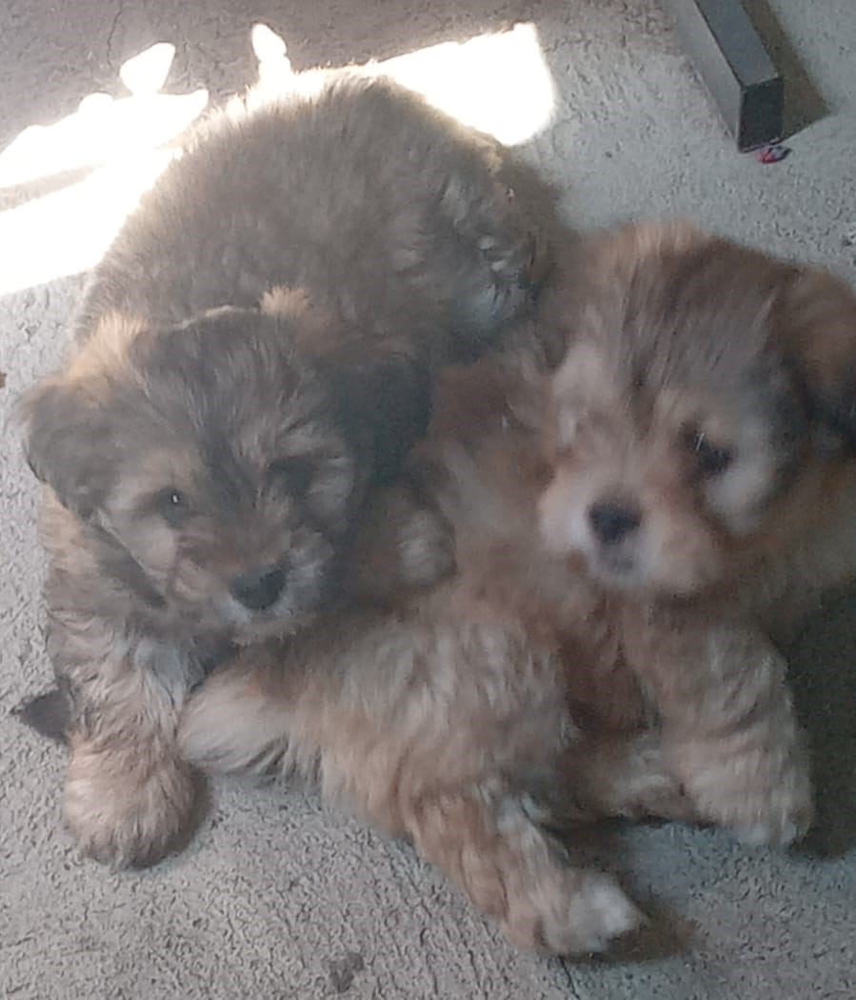
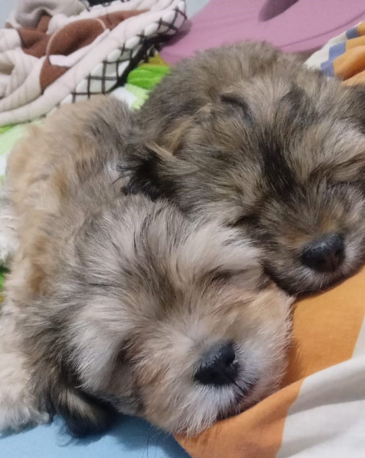
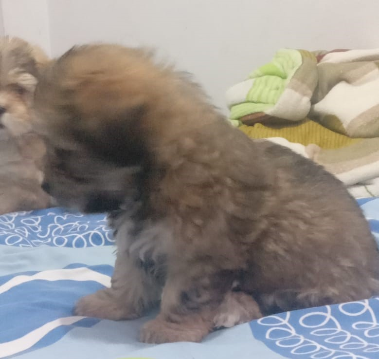
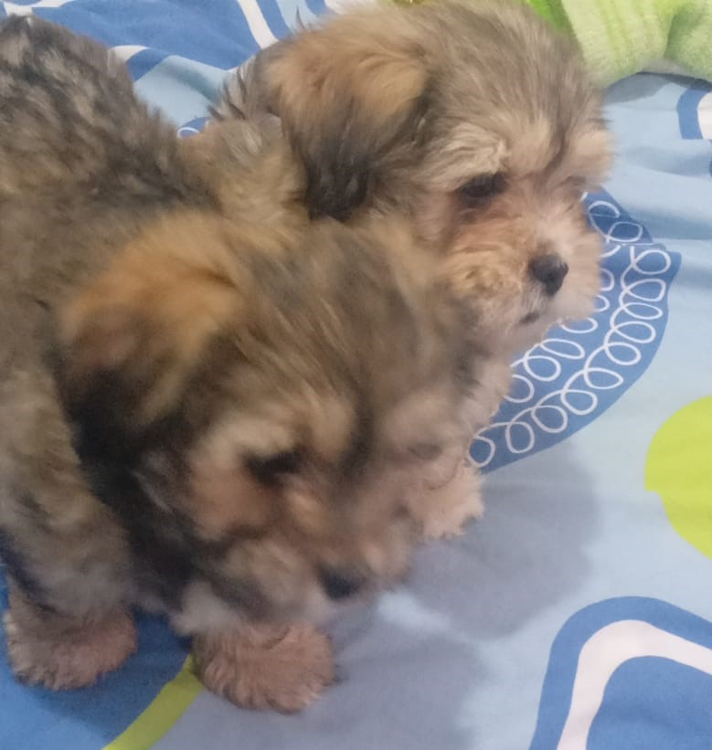

La vida de los hermanos Regu y Bella
Hace tres meses, en un día soleado de junio del año 2023, nacieron dos intrépidos cachorros que habrían de convertirse en los más grandes héroes que jamás hubiera conocido el mundo canino: Bellatrix y Regulus, cariñosamente conocidos como Bella y Regu. Bella, con su pelaje de un marrón oscuro como el chocolate, tenía unos ojos centelleantes llenos de curiosidad desde el momento en que abrió los párpados. Su energía era contagiosa, y su espíritu aventurero se manifestó desde temprana edad. No había seto demasiado alto ni rincón demasiado oscuro para ella; siempre estaba lista para explorar y descubrir un nuevo mundo.
Regu, por otro lado, era el opuesto de su hermana en muchos sentidos. Su pelaje tenía un tono más claro, como el cálido caramelo, y sus ojos eran profundos y reflexivos. Aunque era más reservado, poseía una inteligencia inigualable que le permitía analizar situaciones y tomar decisiones sabias incluso en la más tierna de las edades. A menudo, se quedaba a la sombra de Bella, asegurándose de que su hermana aventurera no se metiera en problemas graves. A pesar de sus diferencias, Bella y Regu compartían un vínculo inquebrantable como hermanos. Pasaban horas jugando en el jardín, persiguiendo mariposas y rodando en la hierba fresca. A medida que crecían, comenzaron a soñar con un futuro extraordinario, uno donde pudieran utilizar sus habilidades para ayudar a otros.
Sus sueños de ser perros superhéroes pronto se volvieron un objetivo serio. Con la orientación de sus padres, quienes eran perros de rescate con experiencia, comenzaron a entrenar arduamente. Bella se centraba en mejorar su velocidad y agilidad, mientras que Regu se dedicaba a fortalecer su astucia y habilidades analíticas. A medida que los meses pasaban, sus habilidades se volvían más impresionantes. Bella podía correr como el viento y saltar como una flecha, mientras que Regu podía resolver rompecabezas y enigmas que desconcertarían incluso a los humanos más inteligentes. Se convirtieron en un equipo imbatible
Aunque aún eran cachorros, sus hazañas no pasaron desapercibidas. La comunidad canina los admiraba y respetaba por su valentía y dedicación. Se ganaron el apodo de los "Pequeños Grandes Héroes" y se embarcaron en aventuras emocionantes para ayudar a quienes lo necesitaban. Hoy, a la edad de tres meses, Bella y Regu siguen luchando por la justicia y la bondad en un mundo que necesita héroes más que nunca. Sus aventuras continúan, y cada día se acercan un poco más a su sueño de convertirse en los perros superhéroes más grandes que jamás haya visto el mundo canino. Juntos, demuestran que la valentía, la inteligencia y la unión pueden superar cualquier obstáculo. Sus hazañas aún están por escribirse, y el mundo espera ansioso sus próximas aventuras.